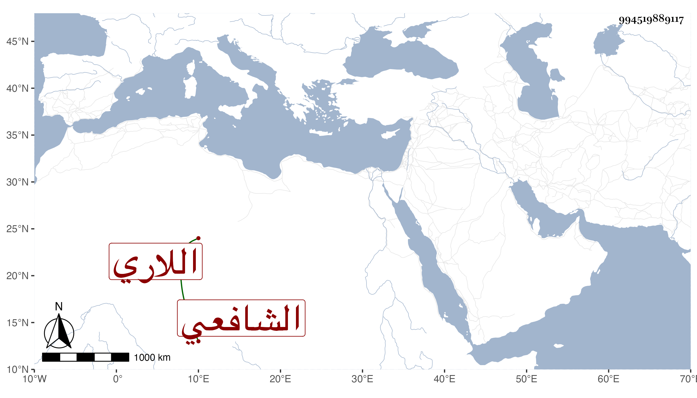

0902Sakhawi.DawLamic.ITO20230111-ara1.EIS1600.994519889117
Biography ID: 994519889117
561
محمود بن عثمان بن أبي بكر بن الحسين بن يعقوب بن الحسين بن يعقوب ابن محمد النجم أو الركن بن النور الكرمستيجي اللاري الشافعي . لقيه الطاووسي في سنة ثلاث وثلاثين فاستجازه بل والتمس هو من الطاووسي الإجازة أيضا قال وكان من كبار الأولياء ، وذكره التقي بن فهد في معجمه فقال إنه سمع من لفظ محمد بن عبد الله الإيجي صحيح البخاري ومشكاة المصابيح وقرأ على النسيم الكازروني معالم التنزيل والشمائل للترمذي وشيئا من أول الشفا وغير ذلك وعلى أخيه أبي عبد الله الكازروني الحاوي الصغير في آخرين ، وأجاز له التنوخي وغيره . مات في ليلة الثلاثاء خامس صفر سنة أربع وثلاثين .
